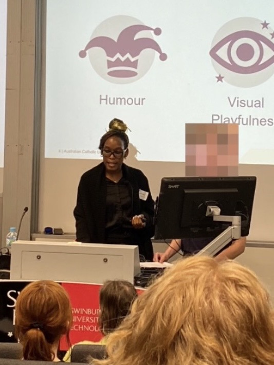

Learning design grounded in empathy, evidence,
and real-world purpose.
Effective learning design begins with empathy and ends with measurable impact. I create experiences that are not only engaging but purposeful — enabling people to perform confidently in real-world contexts.

I design with the learner's reality in mind. In a globalised world, learners bring diverse cultural backgrounds, identities, and experiences. When learners see themselves represented in content and examples, they connect, participate, and persist.
Accessibility is not a retrofit — it is a design principle. I intentionally design learning that is usable by all learners from the outset: clear structure, readable formats, multiple ways to engage, and technology that reduces barriers rather than creating them.
My approach is grounded in learning science: cognitive load theory, spaced and retrieval practice, authentic assessment, and transfer-focused design. Every decision is purposeful, not habitual.
I use digital tools intentionally to improve access, flexibility, and feedback — while keeping the experience simple and aligned with outcomes. Good design is often invisible. When learning is well-designed, learners feel capable, not distracted.
I measure success through performance, not participation. Completion rates have their place, but the true indicator of effective learning is whether people can apply new knowledge and skills in their work and lives.
"Design with intention · Design for people · Design for inclusion · Design for the learner"
The structural logic of everything I build. I start with performance outcomes and design towards them, ensuring every element of a course serves a clear purpose and nothing exists without reason.
The learner experience. I prioritise meaningful engagement, practice, and application over passive content delivery — designing for what learners do, not just what they receive.
The inclusivity layer. I build in flexibility, representation, and multiple means of engagement from the outset — not as an afterthought, but as a foundational design requirement.
Designing learning environments where all students feel they belong and can succeed — with particular attention to representation, connection, and the critical transition into university study.
Moving beyond traditional examinations towards assessment tasks that reflect real-world professional contexts — building graduate capability and confidence alongside disciplinary knowledge.
Exploring how artificial intelligence and emerging technologies can be integrated thoughtfully — improving access, personalisation, and feedback while maintaining a clear focus on learning outcomes over novelty.
My case studies document not just what was built, but how decisions were made — the design tensions navigated, the professional judgements applied, and the reasoning behind every structural choice.
I work best in long-term embedded partnerships with academics. I invest time understanding a subject area, its disciplinary culture, and the specific challenges learners face in practice.
My background spans both higher education and corporate learning and development — which informs how I approach curriculum design with a practical eye for transfer, efficiency, and learner motivation.
"Learning should be designed with the learner's experience and success at the centre. I am always willing to adapt methods, tools, and formats — but I remain committed to designing learning that is inclusive, purposeful, and focused on real outcomes."